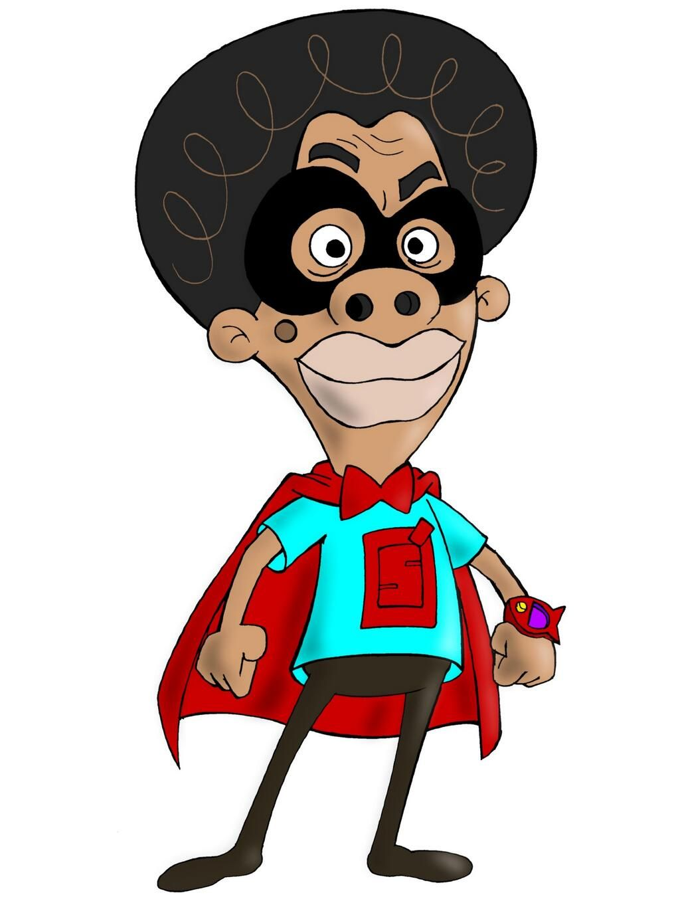
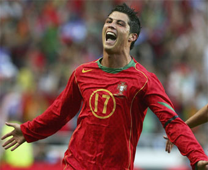

Profesor Super O

El Profesor Súper O es una serie de televisión animada colombiana, de carácter educativo que se transmite en el Canal 13 y Señal Colombia desde 2006. La serie trata sobre un superhéroe llamado El Profesor Súper O, el cual corrige a las personas que cometen errores idiomáticos.1 Tiempo después fue encaminado a otras temáticas como la historia en Súper O histórico,2 la educación ecológica en Súper O recargado, solución de empresas en Súper O Gobierno en Línea, la vida marina en Súper O marino, ser ciudadano y cívico en Súper O cívico, los derechos del consumidor en Súper O consumidor SIC y los géneros de la música en Colombia en Súper O en SHOCK.
Volver al menu
Cristiano Ronaldo

Cristiano Ronaldo dos Santos Aveiro (Funchal, Madeira, 5 de febrero de 1985), conocido como Cristiano Ronaldo, es un futbolista portugués. Juega como extremo izquierdo o delantero y su equipo actual es el Al-Nassr F. C. de la Liga Profesional Saudí.18 Es internacional absoluto con la selección de Portugal, de la cual es capitán, máximo goleador histórico y jugador con más presencias con 200 partidos, logro alcanzado en las eliminatorias para la Eurocopa 2024, reconocido por el Libro Guinness de los récords.19
 Volver al menu
Volver al menu
Emu Otori
Otori Emu (鳳 えむ) es un estudiante de primer año en La Academia de Miyamasuzaka para Niñas . Es parte del grupo de espectáculos musicales Wonderlands×Showtime .
Caracteristicas:
- Emu tiene ojos rosas y pelo corto rosa con corte bob.
- Ella lleva un cárdigan rosa con stickers sobre su uniforme de escuela.
- Su ropa casual consta de una chaqueta rosa puffy, camiseta amarilla, y overoles azules.
- Su ropa para espectáculos consta de un vestido redondo con cintas anudadas en el borde inferior. Tiene cintas anudadas de forma similar en su pelo, en el frente de su vestido, y en sus zapatos. Sus brazos tienen pequeñas mangas separadas de forma redonda, un guante de ópera blanco en el brazo izquierdo y una pulsera en la muñeca derecha. Lleva calcetines altos desiguales con rayas rosa/blanco en la pierna izquierda y blanco liso en la derecha.
Personalidad:
- Emu es muy alegre pero también un poco ingenua
- Es impulsiva
- actúa antes de pensar cuando le da cualquier idea
Saludo de Emu Otori
Volver al menu